术语速查 · 看不懂的英文词和单位点这里
- VOC
- 用户声音 / 用户评价洞察（Voice of Customer），即从真实评论里提炼用户的想法。
- DIY
- 自己动手做（Do It Yourself），这里指用洗衣机滚筒、油桶等自制火盆。
- KBBQ
- 韩式烤肉（Korean BBQ）。
- fire pit
- 火盆，装柴火/炭火的户外火盆容器。
- grill grate
- 架在火上的烤网/烤架。
- radiant heat
- 辐射热，火盆烤在身上的那种暖意（不是靠热空气，是靠热辐射）。
- propane / charcoal / pellet
- 丙烷（液化气，带关阀）/ 木炭 / 颗粒燃料，三种常见燃料。
- smokeless
- 无烟。靠特殊进气让柴火烧得更充分、少冒烟。
- burn ban / 火禁令
- 干旱季政府禁止明火令，烧木/炭常被禁、带关阀丙烷常获豁免。
- BLM
- 美国土地管理局，管辖大片公共露营地，禁火令的执行方之一。
- National Forest
- 美国国家森林，同样在旱季发禁火令。
- overlanding
- 越野自驾露营，开改装车深入无人区。
- DTC
- 品牌直接卖给消费者（Direct-to-Consumer），不经过中间商/经销商。
- ASIN
- Amazon 给每个商品的唯一编号。
- durability
- 耐久性（用久了坏不坏），本报告品类第一大差评源。
- stability / sturdiness
- 稳固性 / 结实程度（桌腿晃不晃、结构牢不牢）。
- portability
- 便携性（好不好带走）。
- functionality / versatility
- 多功能性 / 一物多用程度。
- heat output
- 热输出（火够不够旺、够不够暖）。
- smoke level
- 冒烟程度。
- rust resistance
- 抗锈能力。
- Trustpilot
- 欧美第三方公开消费者点评网站（品牌无法控制内容）。
- Yotpo / Stamped
- 品牌挂在自己官网上的评价系统（样本偏正面）。
- lbs（磅）
- 重量单位，1 lbs≈0.45 公斤。16 lbs≈7.3 公斤。
- $（美元）
- 本报告按 1 美元≈7.2 元人民币换算。
⚡执行摘要：9 条最该先看的结论
① 火禁令是被忽略的最大市场风险
Reddit 第 4 大议题（1,271 条语料中 65 次）。美西 BLM / National Forest 在禁火期要求"火源必须有开关"，烧木/炭/颗粒的产品在旺季不合规。这解释了为什么品类销冠是丙烷的 Outland（17,762 条评分）。→ 丙烷方案不是加分项，是市场准入证。
② "耐久"是品类第一差评源
Amazon 官方属性统计里 durability 363 次提及 / 228 条负面（63%）；与 AroundFire 同为"火网结构"的 Fireside Pop-Up Pit 是 105 次 / 48 负（46%）。AroundFire 官方口径的"火网至少 50 次"在大众市场会被当成缺陷而非规格。
③ "稳不稳"比"轻不轻"重要得多
weight 87 次提及仅 3 条负面；stability + sturdiness 合计 860 次提及、366 条负面。众筹买家已反馈加高腿 "wobble and look flimsy"。
④ "取暖"是第一购买焦虑，也是开放式火网的结构性弱点
YouTube 192 次命中，全采样最高赞负评是 "No radiant heat = no deal."（没有辐射热就免谈，277 赞）。
⑤ 价格锚是 $20–30，不是 $150
Reddit 38 次 DIY / 便宜替代（洗衣机滚筒、$25 网状火盆、$20 炭炉），YouTube 有 "$19 one on amazon"（亚马逊上 19 美元一个）、"£8 at B&M"（英国 B&M 超市 8 英镑一个）。$189–239（约 ¥1,360–1,720）必须用"替代三件装备"的账 + 物理规格来撑，否则被归入 "the price reflects all the $ they put into marketing"（这价格里含的全是他们砸的营销费）。
⑥ 三合一方向被数据支持
Amazon functionality 906 次提及仅 4% 负面、versatility 171 次仅 1% 负面——这是品类里少数"做出来就不挨骂"的属性。观众真正的情绪不是"省钱"，是 "a legitimate kitchen outdoors"（在户外也有一个像样的厨房，94 赞）。
⑦ 桌类产品有两个竞品全踩的独有坑
桌面/坐垫会不会被烧（YouTube 35 次）、桌子太矮（28 次，含 104 赞 "telescoping legs to make it higher"＝希望有伸缩腿把桌子调高）。AroundFire 众筹期已因此加过 70cm 加高腿——这个坑要在详情页正面回答，不是加个 SKU 就完事。
⑧ 售后小动作能救大差评 —— 本次 ROI 最高的一条
Fireside 用户"到手护盾是破的"，一封邮件次日 FedEx 补件 → 仍给 5 星；反面是 Solo Stove——Amazon 4.6 分但 Trustpilot 只有 3.1 分（933 条，1 星占 13%，平台标注"从不回复负评"），竞品 226 条负评里服务与履约类占 43%。建议把火网/螺丝/护盾免费补件政策写进详情页。
⑨ "便携"赛道的评价资产是空的
Fireside Outdoor 官网全站仅 3 条评价、Trustpilot 无页面；Breeo 便携款只有 322 条（主力款的 7%）。早期把评价数堆起来本身就是护城河。
0采集方法与样本量（先说边界，方便判断结论强度）
| 平台 | 采集方式 | 样本量 |
|---|---|---|
| Amazon US | agent-browser 真实浏览器抓 11 个同类爆款商品页：星级分布 +「Customers say」AI 属性摘要（含 Amazon 官方统计的每个属性 positive / negative 提及数）+ 商品页公开评论 | 11 个 SKU、合计 45,000+ 条评分；AI 属性统计覆盖 72 个属性、10,317 条属性级提及（其中 1,441 条负面）；公开评论全文 122 条 |
| reddit.com 本机直连被封（403），改用 Arctic Shift / pullpush 归档 API（内容真实、带 permalink 可回溯） | 58 帖 / 1,588 条评论，其中品类强相关 47 帖 / 1,271 条语料 | |
| Trustpilot / 竞品官网 | scrapling StealthySession + agent-browser + Yotpo 公开 widget API | Solo Stove(933) / Breeo(4,394+322) / Nomad(2,316) / Fireside(3) / BioLite(77)，实抓负评 226 条 |
| YouTube 评论区 | yt-dlp 抓评论（--write-comments，top 排序） | 21 条视频 / 2,273 条评论 |
- Amazon 1–3 星差评全文页：未抓到。
/product-reviews/、/portal/customer-reviews/、/gp/aw/reviews/三条路径全部 302 跳登录墙，amazon.co.uk / amazon.ca 同样拦截。替代方案：Amazon 官方「Customers say」把每个属性的 negative 提及数公开出来了，这是平台自己统计的差评结构，比人工抽读几十条差评更有代表性；差评具体措辞则用 Reddit / Trustpilot / YouTube 补。 - reddit.com 原站：被封。直连 curl、真实浏览器、old.reddit、redlib 两个公共镜像、r.jina.ai 全部 403。已用归档 API 替代，所有引用附原帖 permalink，但最新一两个月的帖子可能缺失。
- Walmart / Home Depot / REI / Wayfair：被封。Walmart「Robot or human?」、Home Depot / REI Akamai Access Denied、Wayfair 人机验证。零数据。
- AroundFire 自有评价未采集到（Trustpilot 无 profile、Amazon 未上架同名 SKU）——本报告是「品类 VOC」而非「AroundFire 产品 VOC」。
iT3F4Z3Ds6Q（21.9 万播放、标题即"我不会再买第二次"的 Solo Stove 负面测评）评论区已关闭，该条最有价值的负面语料未获取。- 所有主题计数为正则关键词命中量级，非人工逐条语义判读；引用原话均经上下文核对。采样量小的地方一律标注「样本小，仅作方向参考」，不做百分比外推。
1Amazon：品类结构与「平台自己统计的差评结构」
1.1 采集的对标 SKU（按评分数排序，均为美国站在架）
| 产品 | 价格 | 评分 | 评分数 | 1-3星占比 | ASIN |
|---|---|---|---|---|---|
| Outland Living 19" 便携丙烷火盆（品类销冠） | $149.33 | 4.8 | 17,762 | 3% | B00KY4S388 |
| Blackstone 5013 折叠烤盘桌架 | $119.99 | 4.5 | 8,785 | 12% | B07C2YP9YQ |
| Ciays 28" 丙烷火盆桌 | $149.99 | 4.5 | 4,296 | 10% | B0CQQW6C8X |
| Bali Outdoors 40" 烧木火盆（带烤架） | $159.99 | 4.6 | 4,089 | 8% | B0FY4Z5RSB |
| Solo Stove Mesa XL 桌面火盆 | $81.99 | 4.6 | 3,761 | 9% | B0BV6B3QWG |
| Iwatani YAKIMARU II 卡式炉烤肉炉 | $107.79 | 4.6 | 2,319 | 11% | B099KBQF4W |
| Fireside Outdoor Pop-Up Fire Pit ＋烤架版（最接近 AroundFire 的火网结构） | $119.95 | 4.7 | 1,477 | 7% | B07GH8984N |
| Fireside Outdoor Pop-Up Fire Pit 24"（火网版） | $99.95 | 4.7 | 1,435 | 6% | B07G9NY6G8 |
| EUTRKei 便携烧烤桌（配 Blackstone） | $109.98 | 4.6 | 1,073 | 7% | B0BWXHYXYT |
| 折叠烧烤推车桌 | $109.98 | 4.6 | 953 | 9% | B0BX937FYW |
| REDCAMP Solo Stove 环绕桌板 | $57.44 | 4.4 | 18（样本极小） | 18% | B0D8771W3Y |


上图为四种典型形态的官网产品图，用于说明表中 SKU 的结构差异（Solo Stove Mesa XL / Bali Outdoors / Iwatani / Ciays 官网产品图未取得，未以替代图冒充）。
读法：品类整体评分虚高（4.4–4.8），差评率 6–12%。这说明「买了就退货」不是主要风险，真正的风险是用过几次以后的失望——下面的属性级负面统计正好抓的就是这一层。
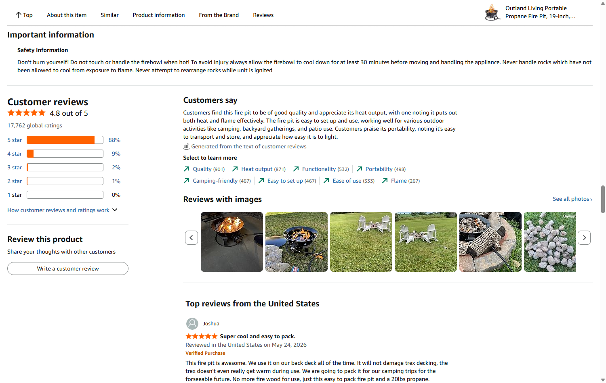
1.2 品类通病排序（用 Amazon 官方「负面提及率」量化）
| 排名 | 通病 | 证据（产品 / 提及量 / 负面数 / 负面率） |
|---|---|---|
| 1 | 耐久性——尤其是"薄金属件/网面/护盾"用几次就坏 | Blackstone 桌架 durability 194 / 167 负 (86%)；Fireside 火网 durability 105 / 48 负 (46%)；Fireside 24" durability 64 / 13 负 (20%) |
| 2 | 稳固性 / 晃动（桌腿、折叠腿） | Blackstone 桌架 stability 542 / 262 负 (48%)、adjustability 207 / 83 负 (40%)；折叠烧烤桌 sturdiness 93 / 30 负 (32%)；EUTRKei sturdiness 102 / 26 负 (25%)；Bali 火盆 sturdiness 123 / 48 负 (39%) |
| 3 | 锈蚀 / 变形（烧木类） | Bali Outdoors rust resistance 59 / 42 负 (71%)；Bali quality 183 / 27 负 (15%) |
| 4 | 尺寸不够用（买回来发现太小） | Solo Stove Mesa XL size 148 / 56 负 (38%)；Iwatani size 12 / 8 负（样本小）；折叠烧烤桌 size 36 / 7 负 (19%) |
| 5 | "无烟"名不副实 | Solo Stove Mesa XL smoke level 120 / 38 负 (32%)。Amazon 官方摘要原文："The smoke level also gets mixed reviews, with some reporting little to no smoke while others experience excessive smoke." |
| 6 | 组装 / 说明书 / 缺件 | Bali assembly 144 / 34 负 (24%)；实例 "I had to go buy my own nuts and screws because the one they sent in the package did not fit!!!"（3★, US, 2026-07-03）、"The instructions are incomplete - page 3, point 31 … the sentence just ends 'Place wood only on the .'"（3★, UK） |
| 7 | 火力 / 热辐射不足、烧木太快 | Outland flame 267 / 45 负 (17%)；Fireside heat output 77 / 18 负 (23%)、burn performance 63 / 10 负 (16%)；Solo Stove heat output 122 / 16 负 (13%) |
| 8 | 性价比争议 | EUTRKei value for money 37 / 6 负 (16%)；Bali value 72 / 13 负 (18%) |


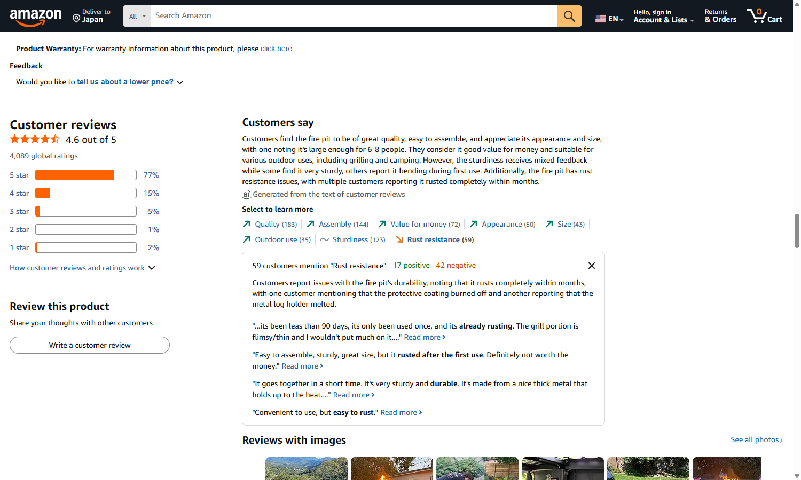
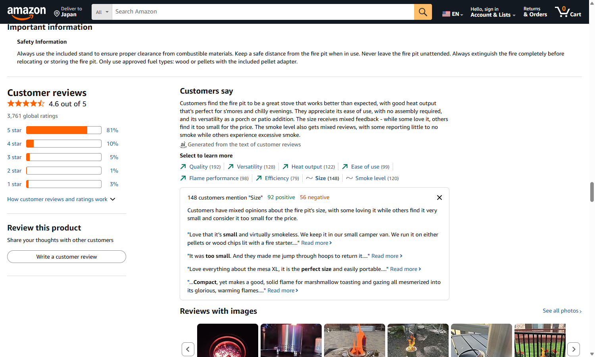
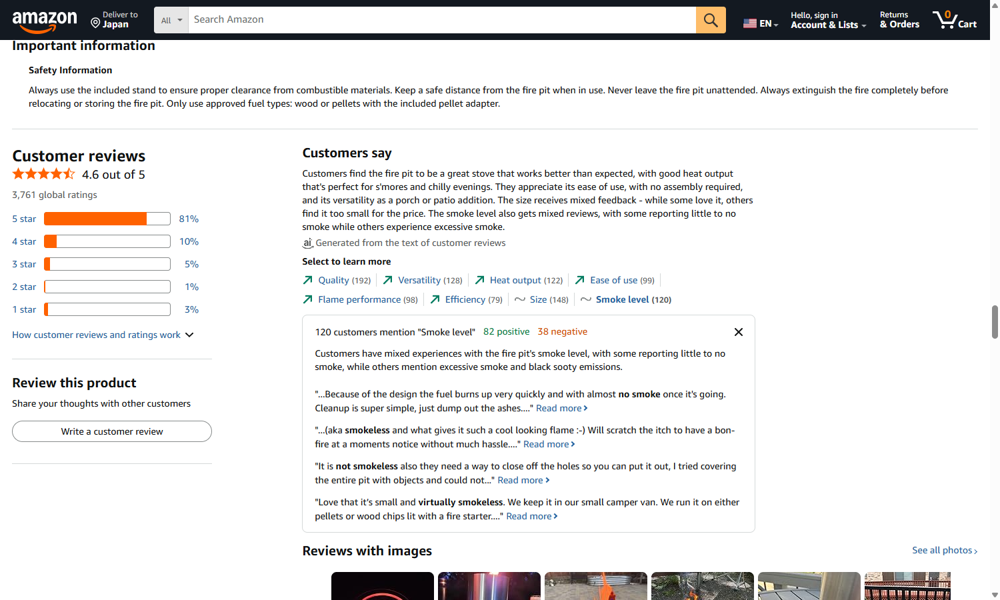
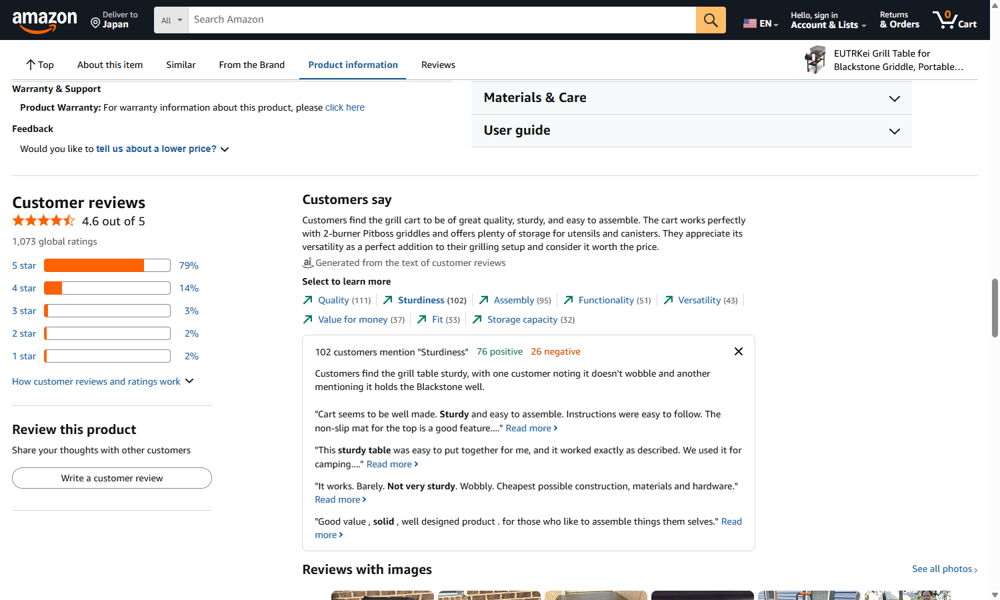
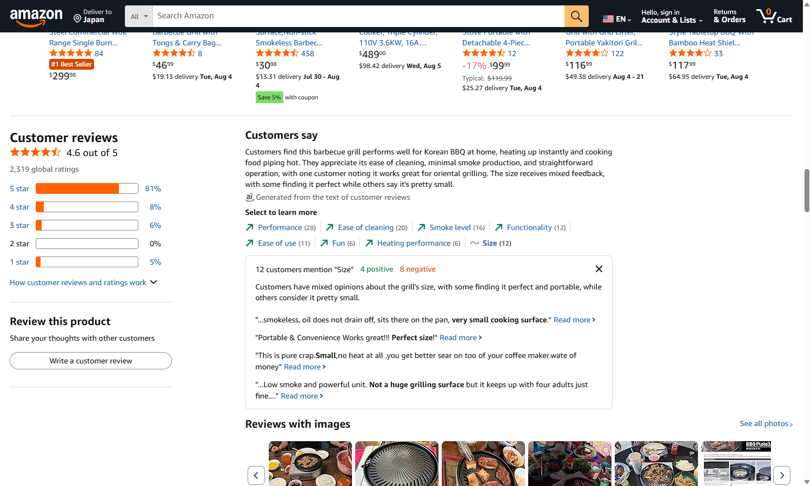
- 排名 1 与 5 正好命中两个核心结构件——300g 不锈钢火网（众筹期官方自己承认"至少 50 次"寿命，backer Ted 质疑后官方回复「we are actively exploring metal solutions to address durability concerns」）和 "less smoke" 宣称。Fireside 是市面上唯一同为"火网结构"的对标品，它的 durability 负面率 46%——这是 AroundFire 最大的口碑地雷。
- 排名 2「晃动」对应双折叠桌腿 + 加高腿配件：众筹买家 Fabrizio Azzolini 已经原话说过 "Mine seem to wobble and look flimsy..not sure I want to be playing around fire with those on."——众筹和 Amazon 大众市场在这一点上说的是同一件事，属于已验证风险。
- 排名 6「缺件/无说明书」，众筹阶段已发生（漏发螺丝、盒内无说明书、配件藏侧袋被误判漏发）。在 Amazon 这种"差评即销量"的环境里，同样的失误会直接砸掉星级。
1.4 跨 SKU 汇总：买家到底在乎什么
Amazon 官方属性提及量，11 个 SKU 合计
| 属性 | 总提及 | 负面 | 负面率 | 解读 |
|---|---|---|---|---|
| quality（做工/质感） | 1,901 | 140 | 7% | 提及量第一 = 买这类产品第一位看"做得扎不扎实" |
| heat output（热输出） | 1,070 | 100 | 9% | 第二位是"够不够暖"——火盆的第一功能是取暖，不是好看 |
| functionality（多功能） | 906 | 40 | 4% | 一物多用被高频提及且几乎无负面 → 3-in-1 卖点方向是对的 |
| portability（便携） | 677 | 33 | 5% | 第四位 |
| easy to set up（好搭） | 575 | 9 | 2% | 负面率全表最低 → 好搭是"及格线"，不是差异化 |
| camping-friendly | 467 | 1 | 0% | — |
| stability（稳固） | 542 | 262 | 48% | 桌类产品的头号地雷 |
| durability（耐久） | 363 | 228 | 63% | 全表负面率最高的高频属性 |
| sturdiness | 318 | 104 | 33% | 同上，桌腿/结构 |
| size | 284 | 80 | 28% | "看图买回来太小" |
| smoke level | 136 | 40 | 29% | "无烟"承诺的兑现率问题 |
| rust resistance | 59 | 42 | 71% | 烧木类的必然结局 |
| versatility | 171 | 1 | 1% | 多功能只要做到了就几乎不挨骂 |
| weight | 87 | 3 | 3% | 重量本身很少被骂——骂的是"稳不稳"，不是"重不重" |
② "多功能"是这个品类少数"只要做出来就不挨骂"的属性（functionality 4% 负面 / versatility 1% 负面）。3-in-1 定位在口碑上是低风险高收益的方向，前提是三个功能都别做成半成品。
2Reddit：真实用户彼此推荐时说什么（最诚实的一层）
采样 58 个帖子 / 1,588 条评论，品类强相关 47 帖 / 1,271 条语料。子版分布：r/camping 20 帖、r/GoRVing 9、r/overlanding 6、r/vandwellers 3、r/KoreanFood 2、r/Cooking / r/BBQ / r/SoloStove / r/CampingandHiking 各 1。
2.1 主题命中排序（1,271 条语料）
| 主题 | 命中 | 占比 |
|---|---|---|
| 做饭 / 烤肉 | 191 | 15.0% |
| 重量 / 体积 / 收纳（"到底算不算便携"） | 138 | 10.9% |
| 烟 / 呛人 / 衣服味 | 79 | 6.2% |
| 火禁令 / 场地规定 | 65 | 5.1% |
| 组装 / 展开 / 晃动 | 45 | 3.5% |
| 社交 / 氛围 / 家人 | 44 | 3.5% |
| 清洁 / 倒灰 / 油脂 | 43 | 3.4% |
| 燃料消耗 / 续航 | 43 | 3.4% |
| DIY / 便宜替代 | 38 | 3.0% |
| 烫 / 安全 / 火星 | 30 | 2.4% |
| 价格贵 / 不值 | 30 | 2.4% |
| 取暖 / 辐射热 | 25 | 2.0% |
| 锈蚀 / 变形 / 寿命 | 20 | 1.6% |
| 桌子高度 / 坐姿 | 10 | 0.8% |
| 不留痕 / 护草地 | 6 | 0.5% |
2.2 【最高优先级】火禁令 = 木柴类便携火盆的"季节性归零"风险
这是众筹 VOC 里完全没有出现、但在 Reddit 上排到第 4 位（65 次命中）的议题，而且直接决定 AroundFire 在美国西部市场能不能用。
"Check the local fire restrictions to confirm that portable wood burning fire pits are even allowed. Every National Forest or BLM district that I have been in has required all sources of flame have an off switch when fire restrictions are in place. In other words, wood fires of any kind do not qualify"（先查当地禁火令，确认便携木柴火盆到底允不允许。我去过的每一个国家森林和 BLM 辖区，一旦发禁火令，都要求所有火源必须带开关——换句话说，任何烧木柴的火都不合规）u/CalifOregonia，55 赞（该帖最高赞），r/overlanding
"I always check each area's website to see what type of restrictions they have. When that's the case I don't even bother with firewood I take a buddy heater with us and a propane bbq."8 赞，同帖
"Just found out that at a BLM destination I have plans to go camping at requires fires to be 'contained or elevated.'"r/camping 帖主
"It is legal to use during level 1 fire bans in most CO counties, when burning wood be prohibited. Zero smoke, zero sparks."18 赞（推荐 Outland 丙烷火盆的理由第一条）

2.3 "便携"是个会被公开审判的词
"Portable is a strong word for that thing."（管那玩意儿叫「便携」也太抬举它了）239 赞
"Just not portable. Better to label it as a deck pit or something."（根本不便携，不如叫它「露台火盆」之类的）87 赞
"'portable' is not the first thing that comes to mind upon seeing this LOL… I'd absolutely love to have one on my back porch, but not in the back of my truck. I doubt I could even lift it into the back of my truck."9 赞
"I think you'll find more buyers in the back porch/deck/patio crowd, it's a cool item but I sure wouldn't haul around for camping trips."6 赞
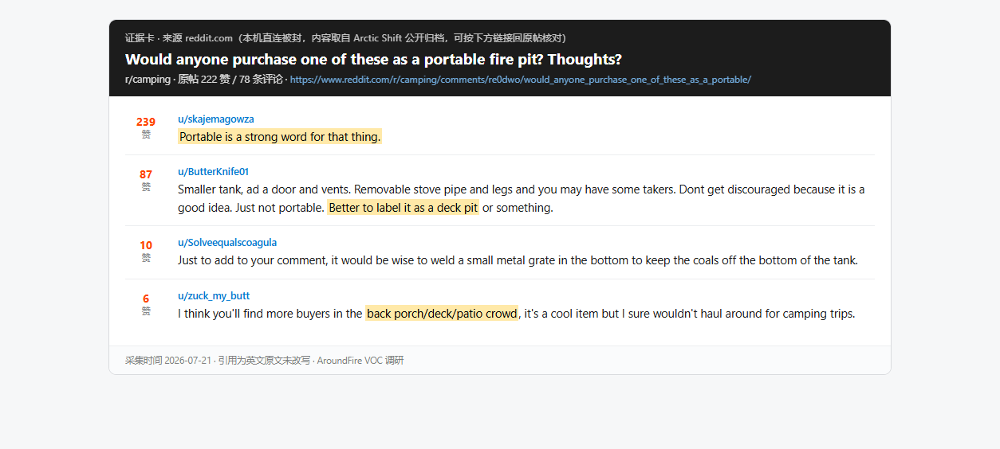
2.4 木柴 vs 丙烷：品类内部的真实分歧
"I always joke to myself a portable fire pit, really? Lol… Not going with the solo I've read it has pretty bad radiant heat distribution and high consumption. Anyone tried the biolite firepit?"16 赞，r/overlanding 帖主 —— 典型的决策路径：先排除 Solo Stove，再在小众品牌间找
"I have the solo stove and love it. Be careful though with smokeless pits! The lack of smoke means you can stand closer… But the fire still produces enough carbon monoxide to give you a whopping headache for hours"8 赞，r/camping
"I love these things. Don't have to breath in smoke and smell like it all the time too. I actually sleep better… Some times you can't beat the crackle of wood and the glow and warmth it puts off"9 赞，r/GoRVing —— 同一个人身上"要无烟"和"要柴火感"并存
"if I take my 3 kiddos on a quick weekend getaway to a beach RV park, the last thing I want to do is fuss with a wood burning fire pit. Clean up, maintenance, etc."6 赞，r/GoRVing
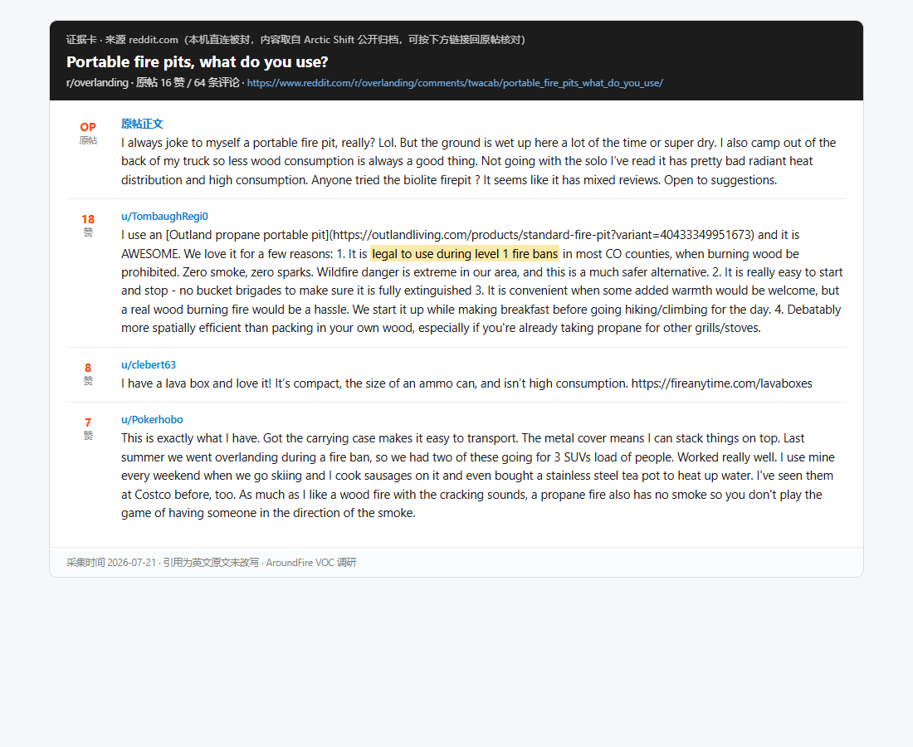
竞品集合（用户自己列出来的对比清单）：Solo Stove（Bonfire / Ranger / Yukon / Mesa）、Outland Living 丙烷、BioLite FirePit、Snow Peak Pack & Carry、Fireside Outdoor Pop-Up Pit、Breeo、Camp Chef Sequoia、LavaBox（弹药箱丙烷）、ORO Flatpack、Weber Smokey Joe，以及大量 DIY：洗衣机滚筒、55 加仑油桶、弹药箱、轮毂、油漆桶。
2.5 价格锚：$0–30 的 DIY 与白牌是真实对手（38 次命中）
"Find a used/broken washing machine and take the drum out of the inside, perfect"r/overlanding
"On Amazon I buy a mesh fire pit for like $25 and it's reusable."r/camping
"Walmart has a $20 10" charcoal grill that isn't great as a grill but is a perfect small firepit."r/camping
"I use a fold flat from Amazon. They're 30 bucks Canadian."r/camping

对照 YouTube 侧同一现象（"$19 one on amazon"、"£8 at B&M"、"$15 washer tub"、Temu 仿品），$189–239 的 AroundFire 面对的不是同价位竞品，而是"这类东西不就是 $20–30 吗"的品类心智。定价页必须把"一个桌 + 一个火盆 + 一个烧烤炉"三件套的替代成本算给用户看——用户自己就在算这笔账："I'm not paying $200 to cook while sitting on the ground"（我才不花 200 美元买个还得坐地上做饭的东西）。
2.6 正向共鸣：围桌吃饭这件事本身有巨大情绪价值
"Korean BBQ is my favorite way to eat, period. There's something damn near magical about sitting around the table with friends/family, grilling delicious proteins as the banchan (side dishes) get passed around the table"（韩式烤肉就是我最爱的吃法，没有之一。一家人朋友围着桌子、一边烤肉一边传递小菜，那种氛围简直有种魔力）168 赞，r/Cooking
"During Covid we were camping a shit-ton and got this tabletop fire pit and still use it all the time. It's smokeless so we can even use it indoors in our camper when it's raining outside and we promised the kids smores lol"11 赞，r/camping
"Wife bought me one for christmas. I thought it was overpriced, but I was wrong. Well worth the money."3 赞，r/overlanding —— "贵"的疑虑是可以被使用频率打破的
3竞品站 / Trustpilot：226 条负评的结构
| 品牌 | 数据源 | 评分 | 评价量 | 本次抓到的负评 |
|---|---|---|---|---|
| Solo Stove | Trustpilot（第三方） | 3.1 / 5 | 933 | 1-2 星 56 条 |
| Breeo X Series | 官网 Yotpo（品牌自建） | 4.86 / 5 | 4,394 | 1-3 星全量 141 条 |
| Breeo Y Series（便携款） | 官网 Yotpo | 4.95 / 5 | 仅 322（主力款的 7%） | 1-3 星仅 2 条 |
| Nomad Grills | 官网 Yotpo | 4.9 / 5 | 2,316（已标 DISCONTINUED） | 1-3 星全量 29 条 |
| Fireside Outdoor | 官网 Stamped.io | 4.7 / 5 | 仅 3 条 | 0 条 |
| BioLite | Trustpilot | 4.3 / 5 | 77（1 星占 21%，两极分化） | 4 条 |
① 站内 4.9 分 vs 站外 3.1 分 —— 落差本身就是情报
品牌自建评价系统（Yotpo / Stamped）全部 4.9 左右（Breeo 负评率 3.0%、Nomad 1.5%），而第三方 Trustpilot 上 Solo Stove 只有 3.1 分、1 星占 13%，页面被平台标注 "Hasn't replied to negative reviews"。站内星级 ≈ 品牌可控样本，站外星级 ≈ 履约与服务的真实体感。（对照：BioLite 被标注 "Replied to 100% of negative reviews"）

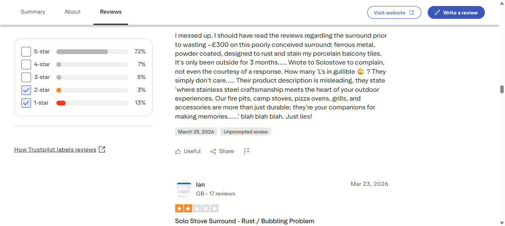

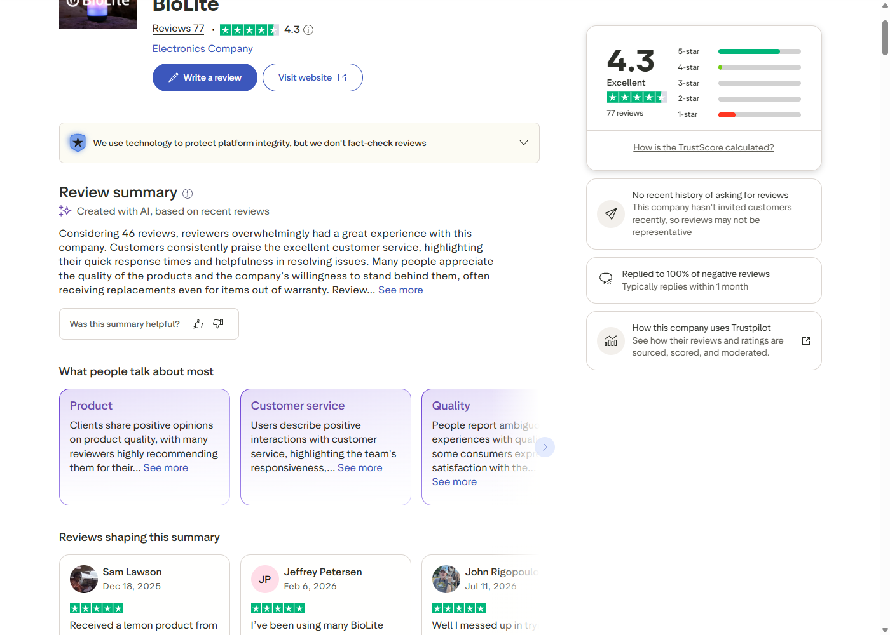
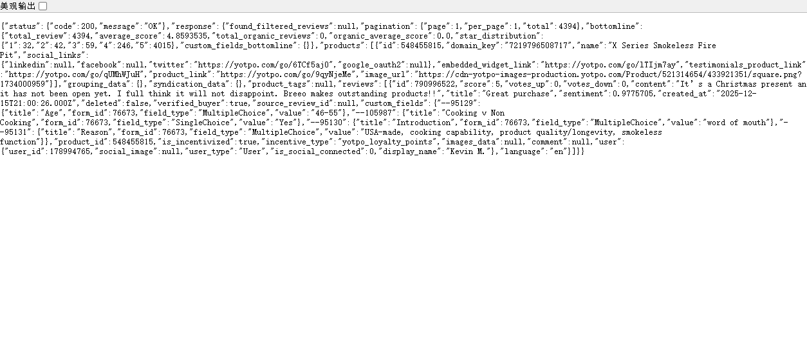
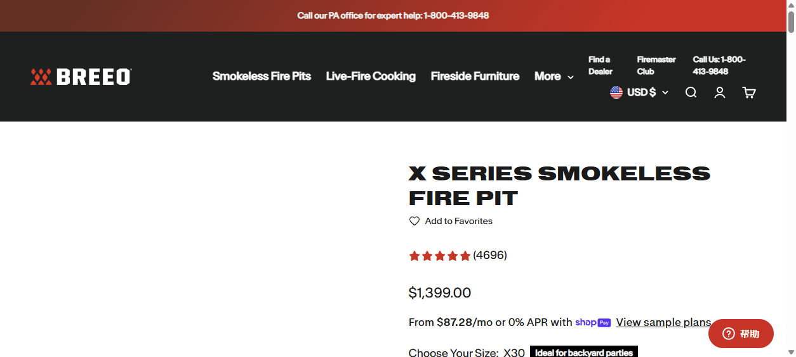

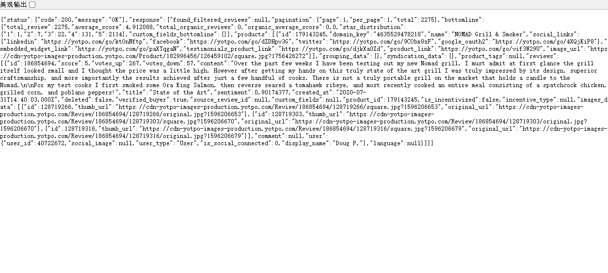
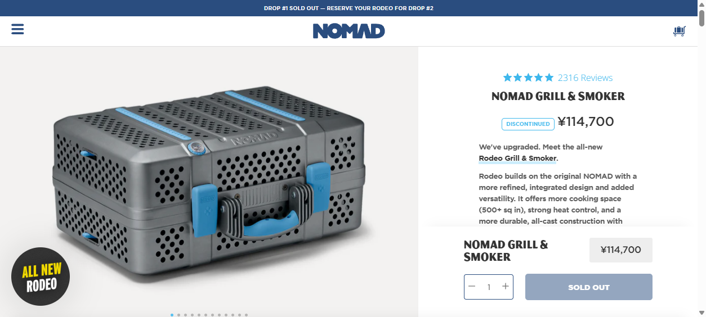
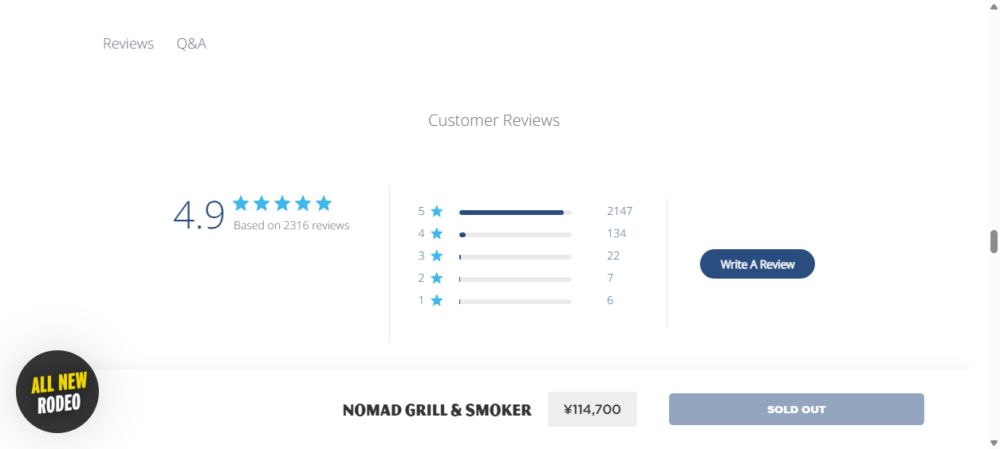
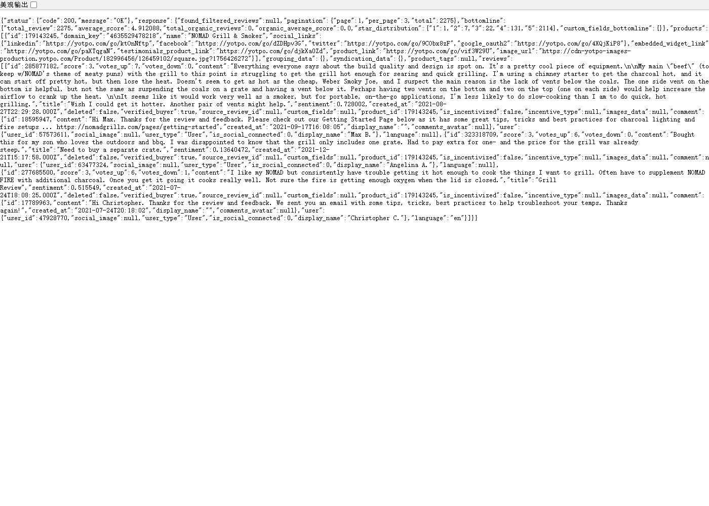

② 跨品牌负评 TOP（226 条合并）
| 排名 | 抱怨 | 命中 | 占比 |
|---|---|---|---|
| 1 | "Smokeless" 名不副实、依然呛烟 | 102 | 45% |
| 2 | 客服联系不上 / 只有机器人 | 39 | 17% |
| 3 | 价格贵 / 配件另收费 | 36 | 16% |
| 4 | 生锈、涂层起泡、结构变形 | 32 | 14% |
| 5 | 发货延迟 / 缺货 / 丢件 | 21 | 9% |
| 6 | 退款拖延 / 退货扣费 | 20 | 9% |
| 7 | 到货破损、缺件、发错货 | 18 | 8% |
| 8 | 清灰困难 / 搬运漏灰 | 14 | 6% |
| 9 | 太重 / 无提手 | 11 | 5% |
| 10 | 使用门槛高（点不着、要特定木柴） | 10 | 4% |
| 11 | 热量不足 / 温度上不去 | 9 | 4% |
| 12 | 保修被拒（锈不保、非授权渠道不保） | 5 | 2% |
③ 三条直接可用的竞品原话（都指向 AroundFire 的同类结构）
生锈 + 保修不认
"despite using the approved solo cover… it is susceptible to rust / bubbling of the powder coat. Customer service have advised that 'While rust is unfortunately not covered under our warranty, particularly when it is cosmetic…'"Ian, GB, 2★, Trustpilot
烧穿变形 = 三年一换
"after 3 years the 'floor, with all the holes in it' sunk from the heat and eventually flattened out… Now the feeding air gets restricted and is as smoky as a regular open firepit… Kind of expensive to buy one every 3 years."Clayton Niederberger, US, Trustpilot
便携产品的隐藏门槛：收之前得先凉
"grill functioned well but need to plan well in advance… I thought it was still too hot when finished cooking to safely put back in the vehicle."Brad B., 3★, Nomad；另有 "Works well but doesn't cool as quickly as they claim. Took almost 2 hours" —— Melanie C., 3★
"底部不烫"宣传被打脸
"From all the video it says the bottom of the Nomad grill doesn't get hot. It got so hot it warps my plastic table. I was so disappointed on false advertisement."Clayton L., 3★
两个战术机会
便携赛道的评价资产是空的
Fireside Outdoor 全站只有 3 条评价、Trustpilot 404；Breeo 的便携款只有 322 条（主力款的 7%）。「便携火盆 + 桌」这个细分里，评价体量本身就能当护城河——AroundFire 早期把评价数堆起来，是低成本高壁垒的动作。
纯机械结构是可打的差异点
BioLite 的差评根因已经从"烟大"变成"蓝牙配不上、电池坏了不能换"。AroundFire 无电子件，可以正面主张 nothing to charge, nothing to pair, nothing to break（没有要充电的、没有要蓝牙配对的、也没有会坏的电子件）。
4YouTube 评论区（21 视频 / 2,273 条评论）

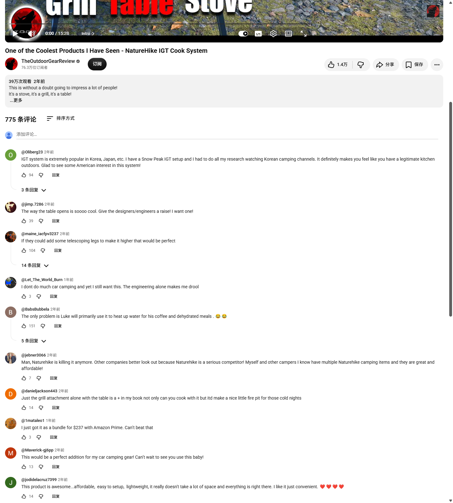
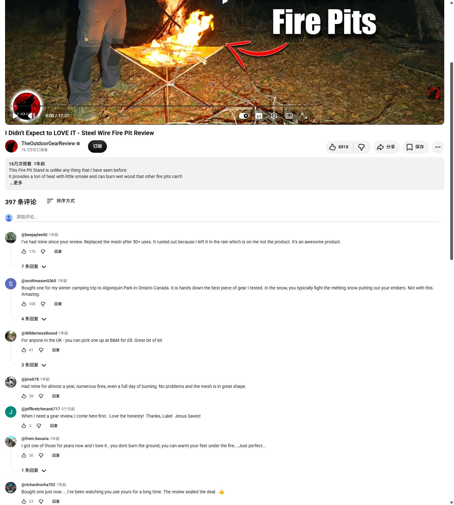
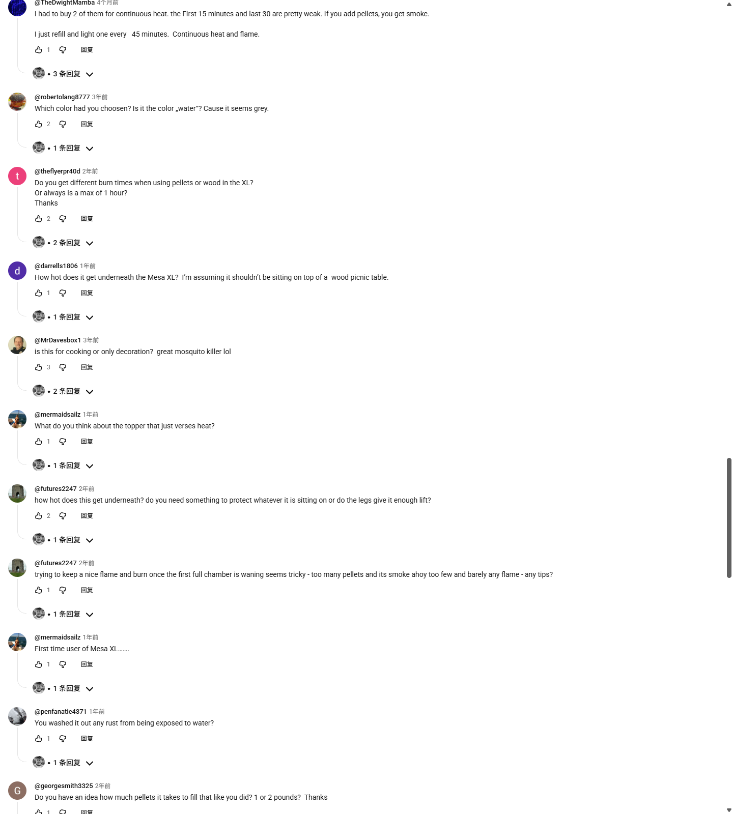
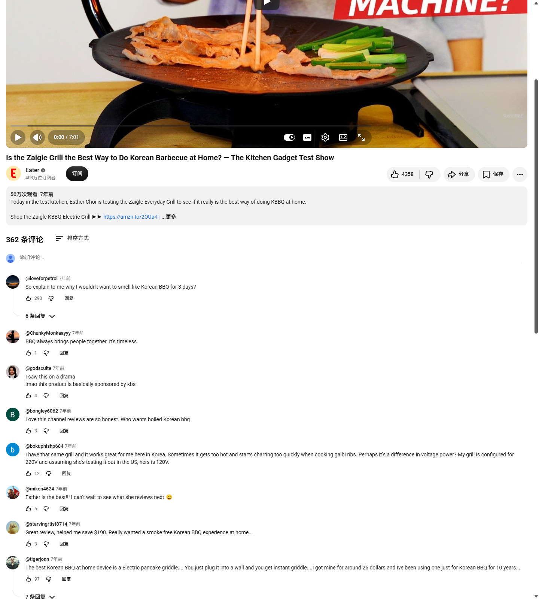
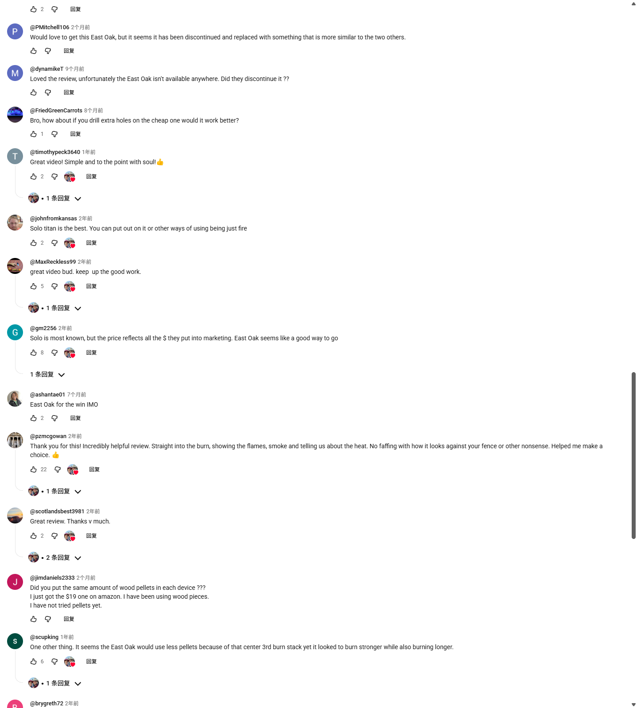
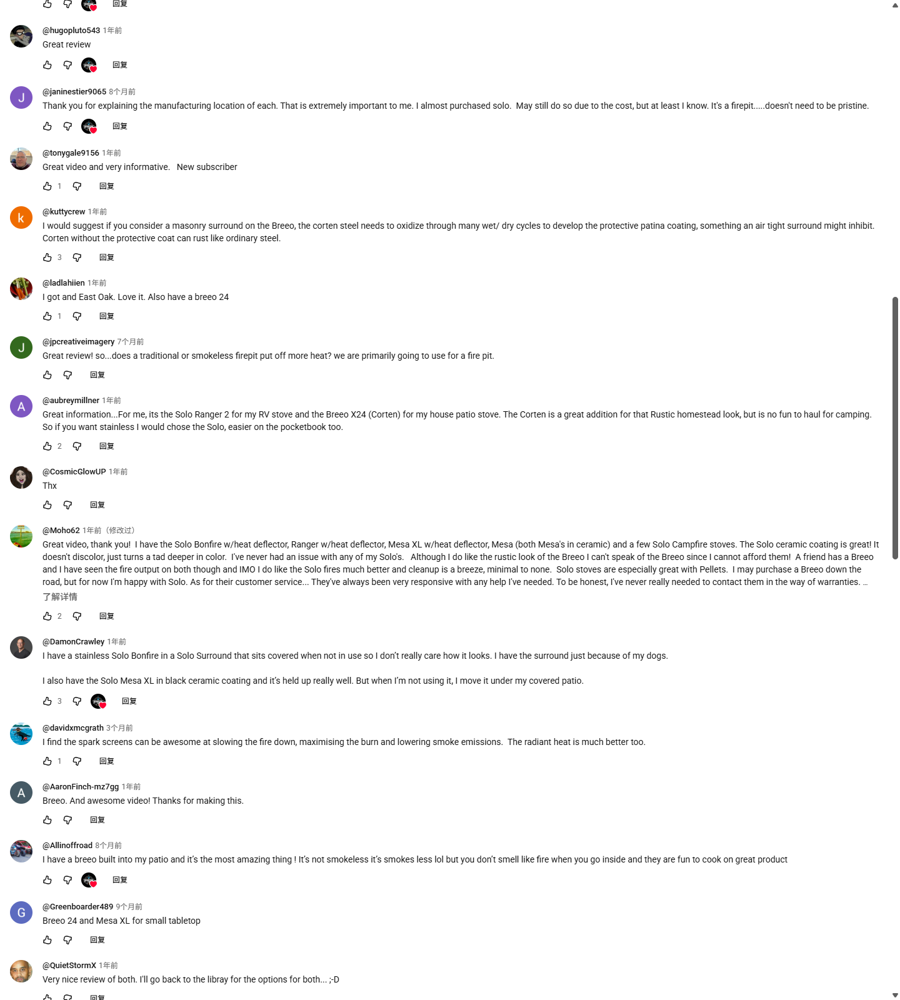
5买家是谁 · 为什么买 · 通病排序
5.1 五类人群及依据
| 人群 | Reddit 命中 | 从原话怎么看出来 | 适配度 |
|---|---|---|---|
| ① 烧烤/做饭导向者（把它当户外厨房） | 59 次（4.6%）+「做饭/烤肉」主题 191 次（15.0%，全场第一） | "We usually cook our food on the grill, rather than our gas stove"；Amazon 侧 functionality 906 次提及 / 仅 4% 负面 | 最高。三合一里"能做饭"是最被在意的一环 |
| ② 汽车露营 / Overlanding | 52 次（4.1%） | "I also camp out of the back of my truck so less wood consumption is always a good thing"；讨论集中在 r/overlanding | 高，但对"多带一件装备"极度敏感 |
| ③ 后院 / Patio 家庭 | 46 次（3.6%） | "I'd absolutely love to have one on my back porch, but not in the back of my truck"；Solo Stove 用户普遍自述 "best suited to stationary home use… entertaining guests at backyard parties" | 高。这类人不挑重量，挑的是"稳、好清理、好看" |
| ④ 房车 RV / Van life | 29 次（2.3%） | "…the last thing I want to do is fuss with a wood burning fire pit. Clean up, maintenance"；r/GoRVing 9 帖全部围绕便携火盆 | 中。他们更倾向丙烷；除非出丙烷方案 |
| ⑤ 亚裔 KBBQ / 围桌聚餐 | 27 次（2.1%），但单条共鸣强度最高（168 赞） | "something damn near magical about sitting around the table with friends/family…"；YouTube 侧 "makes you feel like you have a legitimate kitchen outdoors"（94 赞） | 中高：人群基数小于前四类，但产品形态与他们的用餐仪式 100% 吻合，是转化率最高、内容最好做的一块 |
| （对照）背包/徒步 | 22 次（1.7%） | 明确排除：16 lbs 对背包客不成立 | 不适配，别投 |
5.2 为什么买：动机排序（跨平台）
排序依据：Amazon 官方属性提及量（11 SKU 合计 10,317 次属性级提及）+ Reddit 主题命中 + YouTube 主题命中三方交叉。
| 排名 | 购买动机 | 交叉证据 |
|---|---|---|
| 1 | 做饭 / 一物多用（户外也有个像样的厨房） | Amazon: functionality 906 次（4% 负面）+ versatility 171 次（1% 负面）；Reddit: 做饭主题 191 次（15.0%，第一）；YouTube: 烹饪 158 次 |
| 2 | 取暖 / 火的实感（火盆的第一功能，不是氛围） | Amazon: heat output 1,070 次（第二高）；YouTube: 热量主题 192 次，最高赞负评 277 赞；Reddit: "More radiant heat the better imo" |
| 3 | 省空间 / 便携（一个包搞定桌+火盆+炉） | Amazon: portability 677 次（5% 负面）；Reddit: 便携主题 138 次（10.9%）；众筹原话 "table, fire pit and bbq grill/table top gas stove in one bag!!" |
| 4 | 合规 / 不留痕（能在禁火期、BLM、草地上用） | Reddit 火禁令 65 次 + 不留痕 6 次；"keeps the campsite clean"、"you dont burn the ground"（YouTube 30 赞） |
| 5 | 社交 / 全家一起 | Reddit 44 次（168 赞 KBBQ 长评）；YouTube "get people (especially families) out of the house"；众筹全部核心叙事 |
| 6 | 无烟 / 衣服不臭 | Amazon smoke level 136 次；YouTube "No more musical chairs trying to avoid smoke"；但同时存在反向需求："Smoke keeps the mosquitoes away. Here in Florida, smoke is a must!"（11 赞） |
| 7 | 氛围 / 颜值 | 各平台都有但从不排第一，且常被用来嘲讽（"the perfect suburban toy"） |
5.3 品类通病抱怨排序（合并频次）
| 排名 | 抱怨 | 频次证据 | 对 AroundFire 的风险 |
|---|---|---|---|
| 1 | 耐久性差：薄件/网面/护盾几次就坏 | durability 363 提及 / 228 负面（63%）；同为火网结构的 Fireside 46% 负面；YouTube "screen has a hole"、"Replaced the mesh after 50+ uses"（176 赞） | 🚨 最高。官方自述火网"至少 50 次"，与市场对"耐久"的期待存在硬缺口 |
| 2 | 晃 / 不稳（桌腿、折叠腿、加高腿） | stability 542 / 262 负（48%）+ sturdiness 318 / 104 负（33%）+ adjustability 207 / 83 负（40%）；Reddit 组装/晃动 45 次 | 🚨 最高。众筹买家已原话反馈 "wobble and look flimsy" |
| 3 | 锈蚀 / 变形 | rust resistance 59 / 42 负（71%）；YouTube 22 条（含 176 赞"淋雨锈穿"） | ⚠️ 高 |
| 4 | 尺寸/容量与预期不符 | size 284 / 80 负（28%），Solo Stove Mesa XL 单品 38% 负面；YouTube 尺寸 99 次 | ⚠️ 高（Lite 4-6 人 / Grande 8-10 人的宣称需要实拍佐证） |
| 5 | "无烟"名不副实 / 烟往上冲 | 竞品负评里的压倒性第一：226 条中 102 条（45%），Breeo X Series 141 条负评里 95 条（67%）就是这一条；smoke level 136 / 40 负（29%）；YouTube 96 条；Reddit 79 条 | 🚨 极高。AroundFire 宣称 "less smoke"，措辞比 "smokeless" 安全，必须坚持这个措辞并前置说明"要多大火/什么木柴/多久起效"——竞品的负评几乎全是"宣传没说清楚"而非"产品不行" |
| 6 | 取暖不够 / 辐射热差 | YouTube 192 条（最高赞负评 277 赞）；heat output 1,070 次中 100 负；Reddit "bad radiant heat distribution" | 🚨 高（开放火网 + 桌面遮挡，结构性风险，必须实测回应） |
| 7 | 清洁 / 倒灰 / 油脂滴落 | YouTube 74 条；Reddit 43 条；众筹官方已承认火网 "does not prevent liquid from passing through" | ⚠️ 高（KBBQ 场景下油脂是刚需问题） |
| 8 | 燃料烧得快 / 要频繁添料 | flame 267 / 45 负（17%）；YouTube 29 条（"feed it about every 10-15 minutes"）；Reddit 43 条 | 中 |
| 9 | 组装 / 缺件 / 说明书 | assembly 324 / 44 负（14%）；众筹阶段已发生同类事故 | ⚠️ 高（可控，属流程问题不是设计问题） |
| 10 | 配件贵 / 生态绑定 | YouTube "Weber fire starter cubes are way too expensive"（38 赞）；value for money 109 / 19 负 | 中 |
| 11 | 风大 / 火星 | YouTube 35 条；Reddit 30 条 | 中 |
| 12 | 桌子太矮 | YouTube 28 条（104 赞 "telescoping legs to make it higher"、355 赞"看得我膝盖疼"）；Reddit 10 条 | ⚠️ 高（众筹期已催生 70cm 加高腿 SKU，说明这个坑已踩过一次） |
6决策时和谁比、纠结什么
比价对象是三层，不是一层。
| 层级 | 具体对手 | 用户纠结的原话 |
|---|---|---|
| A. $0–30 的 DIY / 白牌（最危险的一层） | 洗衣机滚筒、弹药箱、油桶、$20 Ozark Trail 炭炉、$25 亚马逊网状火盆、Temu 仿品、£8 B&M | "Who needs a $200 fire pit when you can just make one?"（自己就能做，谁还花 200 美元买火盆？帖名，r/overlanding）；"Nothing beats a plain ol washtub from your old washing machine… Radiates heat incredibly"（旧洗衣机拆下来的滚筒最顶用了，辐射热强得很，33 赞） |
| B. $80–160 的功能型爆款 | Outland 丙烷（17,762 评分）、Fireside Pop-Up（火网同构）、Solo Stove Mesa、Camp Chef Sequoia、Weber Smokey Joe、LavaBox | "Not going with the solo I've read it has pretty bad radiant heat distribution and high consumption" |
| C. $200–400 的品牌溢价层 | Solo Stove Bonfire/Yukon、Breeo、Snow Peak IGT、NatureHike IGT | "Solo is most known, but the price reflects all the $ they put into marketing"（Solo Stove 最出名，但那价格里反映的全是他们砸的营销费，8 赞）；"Breeo all the way. All American, durable x2… Only negative is the price"（选 Breeo 准没错，纯美国造、超耐用……唯一缺点是贵，23 赞） |

四个反复出现的纠结点（附破解方式）
- "一年到底能用几次？" —— "Im on the fence… worried in the end how much i will end up using it"（还在犹豫……担心买回来最后到底能用上几次）。破解方式是多场景实证（后院/露营/尾门/KBBQ 各一条），不是降价。
- "我付的是产品还是营销费？" —— 品牌溢价层的通用质疑。破解方式是物理规格对比（钢材厚度/克重/焊点/承重）。
- "多带一件装备值不值？" —— overlanding（越野自驾露营）人群的空间经济学："If you notice you've gone on a few trips without touching something… you might start to consider better uses for that space"（要是你发现有件装备好几趟都没碰过，就会开始盘算那块空间能不能派上更好的用场，14 赞）。破解方式是"它替代了三件装备"的收纳对比图。
- "我这儿能合法用吗？" —— 破解方式是燃料合规说明 + 丙烷方案。
退货 / 差评的 TOP 5 原因
| 排名 | 原因 | 支撑 |
|---|---|---|
| 1 | 到手/用几次后结构件坏（网破、护盾裂、腿弯、焊点开） | durability 228 条负面 / stability 262 条负面；YouTube "screen has a hole and the heat guard also has damage" |
| 2 | 尺寸/性能与页面预期不符 | size 28% 负面（Mesa XL 38%）、smoke 29% 负面；退货原话："It was too small. And they made me jump through hoops to return it" |
| 3 | 缺件 / 装不上 / 说明书缺失 | Amazon 实例 + 众筹阶段 3 起同类事故 |
| 4 | 锈蚀（尤其淋雨/洗完没干） | rust 71% 负面；YouTube "rusted out because I left it in the rain"（176 赞） |
| 5 | 售后响应慢 / 退货流程麻烦 | 竞品 226 条负评里服务与履约类合计 43%；Solo Stove Trustpilot 仅 3.1 分且被标注 "Hasn't replied to negative reviews"。反例证明可救：Fireside "Came with the heat shield torn but, after one quick email to the company, they FEDEX'd a replacement the next day"（到货时护盾是破的，但给公司发了封邮件，第二天就用 FedEx 补寄了新件）→ 仍是 5 星好评 |
⚠️ 这是建议新增的政策，不是现有政策，需甲方拍板。
7众筹 VOC vs 大众市场 VOC（本报告的核心增量）
| 议题 | 众筹买家（541 backers） | 大众市场（Amazon / Reddit / YouTube / Trustpilot） |
|---|---|---|
| 火网寿命 | 有人问（Iurii、Ted），官方一句"至少 50 次"就过关了 | 品类第一大差评源（durability 63% 负面），同构产品 Fireside 46% 负面，"用 50 次就换网"在大众市场是差评而非答案 |
| 桌腿稳固 | 1 人反馈 wobble/flimsy | stability 48% 负面 / sturdiness 33% 负面，是桌类产品头号地雷 |
| 取暖能力 | 几乎没人问（大家关注"热不热到腿"） | YouTube 第一大焦虑（192 次，最高赞负评 277 赞） |
| 火禁令合规 | 仅澳洲 1 位 backer 提过 | Reddit 第 4 大议题（65 次），直接决定美西旺季能否使用 |
| 价格 | 众筹价 $149–199 + "MSRP $299 五折"锚定，几乎无异议 | $189–239 面对 $20–30 DIY 和 $80–160 爆款的双重夹击，品牌溢价被默认归因为"营销费" |
| 缺件/说明书 | 发生了 3 起，backer 宽容 | 同样问题在 Amazon 直接变 3 星差评（"Buyer beware!"） |
| 桌子高度 | 集中反馈 → 官方加了 70cm 加高腿 $9.99 | 同类产品 104 赞 "telescoping legs to make it higher"、13 赞 "I'm not paying $200 to cook while sitting on the ground" —— 同一个坑，大众市场骂得更狠 |
| 社交叙事 | 最强共鸣（"解放烤肉的那个人"） | 同样成立（KBBQ 168 赞、"把家人从屋里拉出来"）——唯一可以原样复用的资产 |